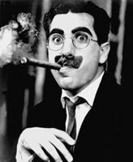
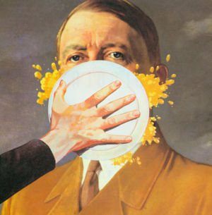

Bigote
 De: La Frikipedia, la enciclopedia extremadamente seria.
De: La Frikipedia, la enciclopedia extremadamente seria.
| De la serie arreglos capilares y vellosos:
|
| Bigote
|
| 
|
| El bigote de Groucho Marx pertenece a la misma categoría que el de Stalin.
|
|
| Forma
|
Pegote de pelos bajo la nariz
|
| Creador
|
Un genio desconocido
|
| Época de esplendor
|
Principios del siglo XX
|
| Lucido por
|
Gente distinguida
|
| Detalle distintivo
|
El peine bigotero
|
| Nivel de frikismo
|
Medio
|
| Popularizado por
|
El puto Kaiser de Prusia
|
El bigote es un matojo de pelillos que crece bajo la nariz sólo a quienes se suenan constantemente. El bigote es más común en los hombres que en las mujeres, salvo en el caso de la mujer barbuda y otros. Cabe decir también que el bigote tiene muchos usos, algunos de ellos muy discutidos.
Usos del bigote
- El bigote puede usarse para secarse los labios tras beber algo líquido al 100%, en el caso contrario, este uso puede ser altamente nocivo.
- También es frecuente su uso como instrumento de intimidación, como pasa con las cadenas, los tatuajes y los pendientes.
- A veces, el bigote es usado para encender fuego, pero sólo suelen hacerlo personas con el coeficiente intelectual inferior a 12,143834246327463287462734, siendo las últimas nueve cifras periódicas.
- El bigote usualmente es un signo de identidad de los franchutes.
- Algunos hombres calvos llevan bigote para demostrar que aún les crecen pelos en algún lugar del cuerpo, que este visible, claro.
- Está demostrado científicamente que los bigotes protegen la piel sobre la que crecen de las quemaduras de primer grado, no de segundo ni de tercero.
- Dice la leyenda que un pucelano vivía en Mancasala, que su madre era un calcetín y que su padre era un jamelgo. Dícese que este hombre se cubría la cara con su tupido vello, que nadie imitaba mejor al hermano malvado de Peter Griffin, pero que un día, cuando cumplía los 5843 días a fecha 26 de abril del 2010, su padre, le regaló un cortacésped, y este pobre hombre, vivió la vergüenza de no tener bigote.
- Las mejicanas lo usan frecuentemente no se sabe con que fin. algunos dicen q la mujer barbuda es mejicana.
- esta científicamente comprobado que ha sido usado para cepillarle los dientes a la novia de algun sujeto insalubre
- Para mandar a pastar a la gente.
Origen del nombre
El origen del término bigote es muy discutido. Para algunos es una deformación del vocablo culto cogote, haciendo referencia probablemente a los pelos del cogote, muy similares a los del bigote. Otra tesis es que provenga del término con el que los habitantes de La Coruña llamaban a sus vecinos de Vigo en el siglo VII, vigotes. Otra posibilidad es que provenga del francés, ya que la palabra mostacho, que significa bigote grande, se parece fonéticamente a gabacho, diminutivo cariñoso que siempre se ha dado a todo francés. La última, y más improbable teoría es que el origen de esta curiosa palabra sea un insulto alemán ya olvidado.
El bigote en la política
 El bigote de Hitler es tan siniestro que es mejor taparle la cara para no verlo
El bigote es el siniestro identificativo de todo dictador o político supuestamente democrático de la historia mundial. Tanto rojos como fachas se han valido de sus bigotes para provocar una sensación de miedo a sus rivales. Los casos más antiguos que se conocen son los de Hitler y Stalin, aunque Marx ya llevaba bigote (pero con barba, lo que desmonta la afirmación de que fue é el primer bigotudo de la historia política moderna.
Ha habido principalmente dos tipos de bigotes:
- Bigotes pequeños: usados principalmente por Hitler, Charles Chaplin, Saddam Hussein y Aznar. Son bigotes cuyo objetivo es dar una imagen imponente a quienes lo llevan, aunque frecuentemente el efecto causado es el contrario, y son usados como burla. Por ejemplo todos querríamos arrancarle el bigote a Hitler y metérselo por el culo.
- Bigotes grandes: usados por Stalin, Groucho Marx, Zapata y por el 93% de los oficiales británicos destacados en la India durante el siglo XIX. Estos bigotes buscan dar un aire de gran líder a quien lo lleva o dar miedo, tambien talvez para verse mas peludo porque Stalin da más miedo con bigote que sin él. El efecto puede ser, como en el caso anterior, el contrario.
Autor(es):
- Fordus
- Epikurolibre
- Roms
- Nadaquever
- Hank
- Diegocon13
- Patadaenelcraneo
- ArreKarallo
- Kenth
- Evidence nobbe
Frikipedia 2005-2016, Licencia
GFDL 1.2 - Extraído por FrikiLeaks